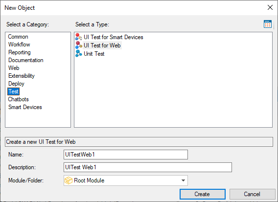

Represents a GeneXus Procedure object with the ability to control the browser using different commands, such as opening the browser, clicking or typing over different controls, checking text on panels and values over controls (variables/ attributes), etc. You can create a UI Test for Web object through the New Object dialog: 
See AlsoIntroduction to UI Test for Web Automation
|